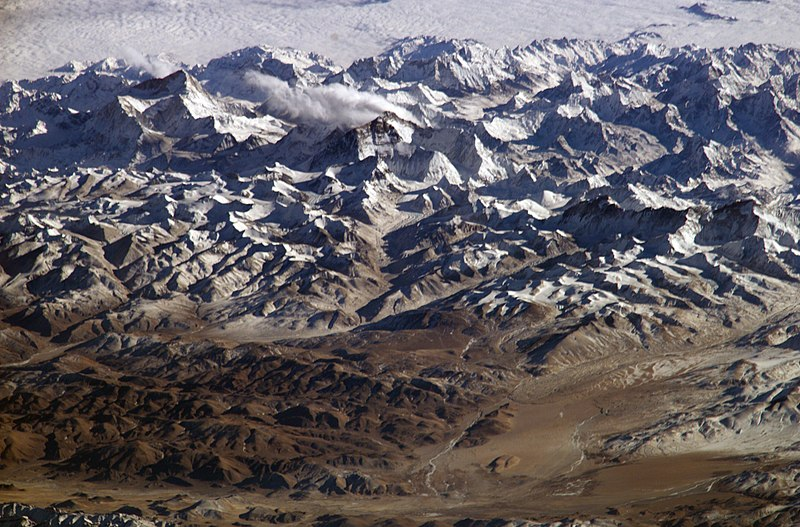
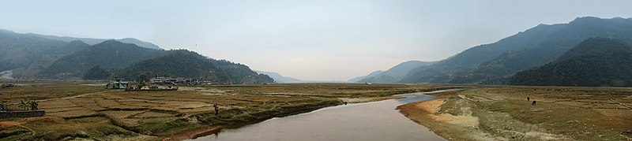
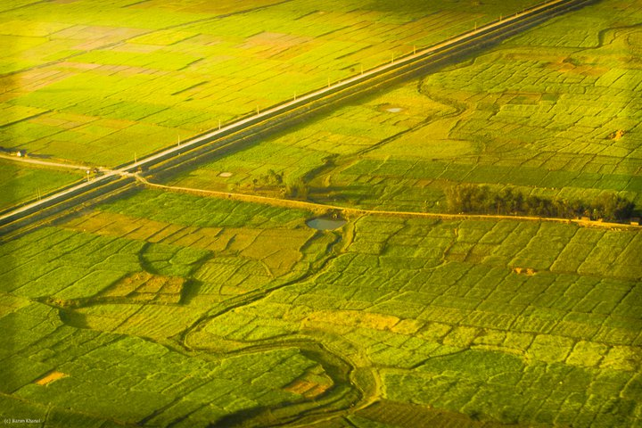

Home
Geography of Nepal
Nepal measures about 880 kilometers by 150 to 250 kilometers across. It has an area of 147,516 km2. Nepal is landlocked by China to the north and India on other three sides. West Bengal's narrow Siliguri Corridor separate Nepal and Bangladesh. To the east are Bhutan and India.
Geographical Regions of Nepal
Nepal is divided into 3 different geographical regions. They are:
Himalayan Region

Himalayan Region is a mountainous region containing snow. The Mountain Region begins where high ridges begin substantially rising above 3,000 metres into the subalpine and alpine zone which are mainly used for seasonal pasturage. By geographical view, it covers 15% of the total area of Nepal. A few tens kilometers further north the high Himalaya abruptly rise along the Main Central Thrust fault zone above the snow line at 5,000 to 5,500 metres. Some 90 of Nepal's peaks exceed 7,000 metres and eight exceed 8,000 metres including Mount Everest at 8,848 metres and Kanchenjunga at 8,598 metres.
Hilly Region

Hilly Region is a mountain region which does not generally contain snow. It is situated to the south of the Himal Region. This region begins at the Lower Himalayan Range, where a fault system called the Main Boundary Thrust creates an escarpment 1,000 to 1,500 metres high, to a crest between 1,500 and 2,700 metres. It covers 68% of the total area of Nepal.
These steep southern slopes are nearly uninhabited, thus an effective buffer between languages and culture in the Terai and Hilly. Paharis mainly populate river and stream bottoms that enable rice cultivation and are warm enough for winter/spring crops of wheat and potato.
Terai Region

Terai is a low land region containing some hill ranges. Looking out for its coverage, it covers 17% of the total area of Nepal. The Terai region begins at the Indian border and includes the southernmost part of the flat, intensively farmed Gangetic Plain called the Outer Terai. By the 19th century, timber and other resources were being exported to India. Industrialization based on agricultural products such as jute began in the 1930s and infrastructure such as roadways, railways and electricity were extended across the border before it reached Nepal's Pahad region.